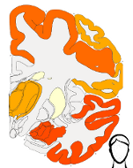
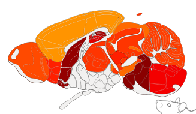

Easy visualization of brain data as a heatmap
Use this page to generate brain heatmaps ontop of the Allen Brain Atlas. You can generate heatmaps for the human brain (such as this ) or for the mouse brain (such as this). This is done by editing a google spreadsheet template and publishing it to the web.
* If you are more comfortable using matlab you can find the source code on my github page .
 
File -> make a copy
File -> publish to the web -> start publishing
then copy the link.
I would like the thanks The Allen Institute for the hard work they put in creating the reference atlases and for making them publicly available online.